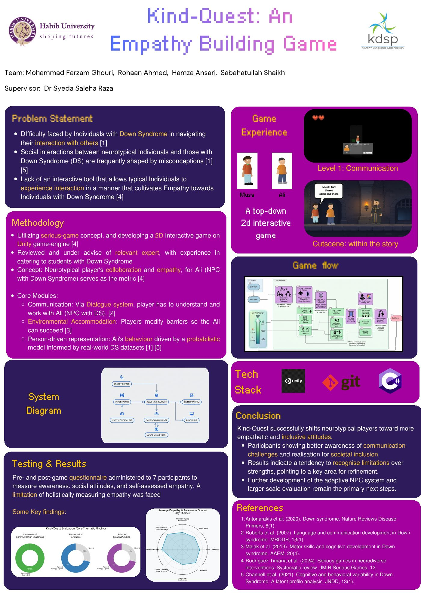

01
Behavioral Simulation & Serious Gaming
Kind-Quest
Inverted Assistive Framework · Down Syndrome Empathy Simulation
Kind-Quest inverts traditional assistive models by placing neurotypical players in collaborative scenarios with 'Ali' (an NPC with Down Syndrome). Players directly experience communication friction, expressive language delays, and motor pacing in a consequence-free environment.
Unity (C#) · Live build on the showcase floor
Level 1: Communication
Habib University FYP Showcase 2026 · In partnership with KDSP

FYP Research Poster
Problem Statement, Flowchart, Tech Stack & Results